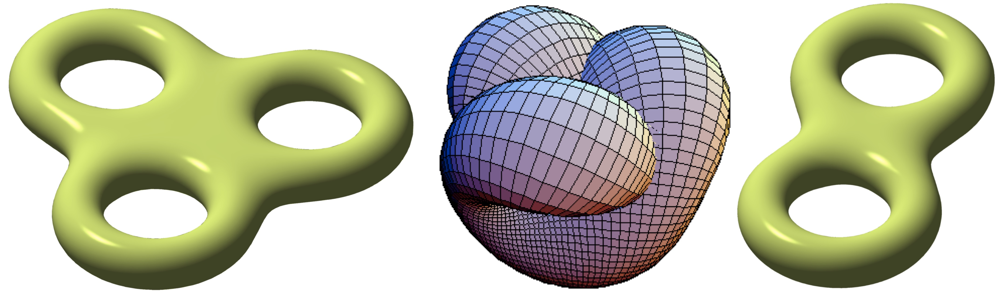

We will typically meet on Mondays, Wednesdays, and Fridays, 11:00-11:50am, in KAP 134 (see the schedule below for academic holidays and other modifications). We may occasionally meet via Zoom.
This course is an introduction to smooth manifolds. Roughly speaking, these are spaces which look locally like Euclidean space, but may have nontrivial global structure. The smooth structure allows us make sense of notions such as derivatives of maps, tangent vectors, embeddings, etc in this abstract setting. Although the basic definitions will appear at first glance somewhat abstruse, once set up properly the theory of smooth manifolds is remarkably rich, and plays a fundamental role in modern geometry.
We will assume familiarity with
Some of the topics we may cover over the course of the semester (time permitting) include:
We will be primarily following Lee's book. This text is rather lengthy compared to others, but it is very well-organized and comprehensive. I suggest reading the relevant sections early (ideally in advance of the lectures) and often. You should think of the lectures as a guide to help develop your intuition about key concepts, with the primary textbook providing much fuller details and further elaborations. For an alternative perspective I recommend the secondary textbook by Tu, which provides a well-written and concise approach and covers similar material. Note that there are also numerous other popular introductory texts on smooth manifolds, and I encourage you to further utilize any references you find beneficial.
In addition to the lectures, there will be weekly problem sets. These will be listed on this website (see the schedule below) and will be handed in via Gradescope. Late homeworks will not be accepted without prior approval from the instructor or TA.
Much of the course material will be developed in the problem sets. It is very important to do all of the problem sets to the best of your ability and to challenge yourself to solve the problems on your own, as this is the most effective way to absorb the material. We expect students to devote a significant amount of time to the problem sets.
While working on the problem sets, you are allowed to consult or collaborate with your peers, as well as textbooks and the internet (apart from cheating websites such as Chegg or Cramster). However, you must write down attributions for any peer, textbook, website etc from which you took any significant ideas. Moreover, you must attempt all problems on your own and your submitted solutions must be written out originally and individually. Submissions which are copied or suspiciously similar are subject to being rejected and potential disciplinary action.
There will be one midterm exam and one final exam. The midterm will occur in early March (precise date TBA).
Homeworks: 40%, midterm exam: 25%, final exam: 35%.
| $\#$ | Date | Material | References | Problem set |
|---|---|---|---|---|
| 1 | Monday 1/9/23 | Topological manifolds and examples. Local coordinate charts and atlases. | Lee §1, Tu §1,§5. I also suggest reading the appendix of Lee and/or appendices A,D of Tu if you need a refresher. | Problem set 1 (due Wednesday 1/18/23 by 11:59pm LA time). |
| 2 | Wednesday 1/11/23 | Atlases on spheres and real projective sphere. Smooth compatibility of local coordinate charts. | Lee §1,§2 | |
| Friday 1/13/23 | The definition of a smooth manifold and various examples. Smooth maps between smooth manifolds. Diffeomorphisms. | Lee §1 | ||
| Monday 1/16/23: MLK day - no class | ||||
| 3 | Wednesday 1/18/23 | Smooth maps between smooth manifolds. Composition of smooth maps is smooth. Checking smoothness in some explicit examples. Distinct smooth structures on $\mathbb{R}$ which are diffeomorphic. Definition of Lie groups. | Lee §2 | Problem set 2 (due Wednesday 1/25/23 by 11:59pm LA time). |
| 4 | Friday 1/20/23 | First examples of Lie groups. Bump functions and partitions of unity. Sample applications. Paracompactness. | Lee §2 | |
| 5 | Monday 1/23/23 | Proof of the existence of partitions of unity. Introducion to tangent spaces. | Lee §2,§3 | |
| 6 | Wednesday 1/25/23 | Tangent vectors and tangent spaces. Definition in terms of derivations and description of tangent spaces to $\mathbb{R}^n$. | Lee §3 | Problem set 3 (due Wednesday 2/3/23 by 11:59pm LA time). |
| 7 | Friday 1/27/23 | More on tangent spaces. Pushforwards of tangent vectors. The basis of coordinate tangent vectors. | Lee §3 | |
| 8 | Monday 1/30/23 | The chain rule in terms of compositions of pushforwards. Change of basis for tangent vectors. | Lee §3 | |
| 9 | Wednesday 2/1/23 | Tangent vectors to smooth curves. The tangent bundle as a smooth manifold. Maps of constant rank, submersions, and immersions. | Lee §3,§4 | |
| 10 | Friday 2/3/23 | More on maps of constant rank. Topological and smooth embeddings. Local diffeomorphisms. The constant rank theorem and inverse function theorem. | §4 | Problem set 4 (due Friday 2/10/23 by 11:59pm LA time). |
| 11 | Monday 2/6/23 | Proof of the inverse function theorem. | §4 | |
| 12 | Wednesday 2/8/23 | Proof of the constant rank theorem. The implicit function theorem. | §4 | |
| 13 | Friday 2/10/23 | Proof of the implicit function theorem. The Baire category theorem. The global rank theorem. Smoothly embedded submanifolds | §4,§5 | Problem set 5 (due Monday 2/20/23 by 11:59pm LA time). |
| 14 | Monday 2/13/23 | Review of the global rank theorem. Smoothly embedded submanifolds. Characterization in terms of local $k$-slices. Uniqueness of the smooth structure on an embedded submanifold. | §5 | |
| 15 | Wednesday 2/15/23 | Regular points, singular points, regular values, singular values. Constant rank level set theorem. Regular level set theorem. Various characterizations of the tangent space to a submanifold as a subspace of the tangent space of the ambient manifold. | §5 | |
| 16 | Friday 2/17/23 | Immersed submanifolds and examples. Null subsets of manifolds and their basic properties. Statement of Sard's theorem. | §5,§6 | |
| Monday 2/20/23: President's day - no class | Problem set 6 (due Monday 2/27/23 by 11:59pm LA time). | |||
| 17 | Wednesday 2/22/23 | Sard's theorem and its proof. | §6 | |
| 18 | Friday 2/24/23 | Completion of the proof of Sard's theorem. The (strong and weak) Whitney embedding and immersion theorems. | §6 | |
| 19 | Monday 2/27/23 | Proof of the weak Whitney immersion theorem. Introduction to vector fields. | §6,8 | |
| 20 | Wednesday 3/1/23 | Vector fields and derivations. Local and global frames. Parallelizable manifolds. | §8 | Problem set 7 (due Wednesday 3/8/23 by 11:59pm LA time). |
| 21 | Friday 3/3/23 | Pushing forward vector fields along diffeomorphisms. Lie bracket of vector fields and basic properties. | §7,8 | |
| 22 | Monday 3/6/23 | The Lie algebra of vector fields on a smooth manifold. The Lie algebra of left invariant vector fields on a Lie group. | §7,8 | |
| 23 | Wednesday 3/8/23 | The Lie algebra of the general linear group. The orthogonal group as a smooth manifold. | §7 | Problem set 8 (due Wednesday 3/22/23 by 11:59pm LA time). |
| 24 | Friday 3/10/23 | The Lie algebra of the orthogonal group. Ordinary differential equations and integral curves of vector fields. | §7,9 | |
| Monday 3/13/23: Spring recess - no class | ||||
| Wednesday 3/15/23: Spring recess - no class | ||||
| Friday 3/17/23: Spring recess - no class | ||||
| 25 | Monday 3/20/23 | |||
| 26 | Wednesday 3/22/23 | |||
| 27 | Friday 3/24/23 | |||
| 28 | Monday 3/27/23 | |||
| 29 | Wednesday 3/29/23 | |||
| 30 | Friday 3/31/23 | |||
| 31 | Monday 4/3/23 | |||
| 32 | Wednesday 4/5/23 | |||
| 33 | Friday 4/7/23 | |||
| 34 | Monday 4/10/23 | |||
| 35 | Wednesday 4/12/23 | |||
| 36 | Friday 4/14/23 | |||
| 37 | Monday 4/17/23 | |||
| 38 | Wednesday 4/19/23 | |||
| 39 | Friday 4/21/23 | |||
| 40 | Monday 4/24/23 | |||
| 41 | Wednesday 4/26/23 | |||
| 42 | Friday 4/28/23 | |||
| Wednesday 5/3/23: 11am-1pm | final exam |